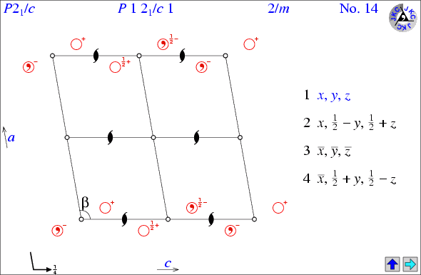
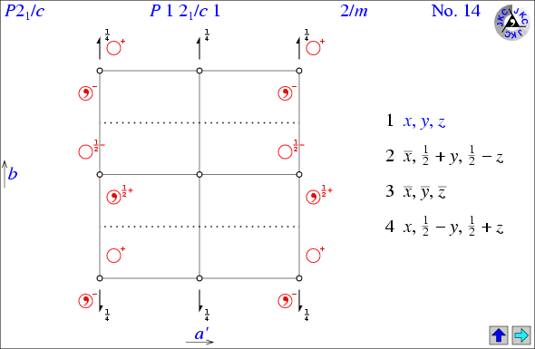
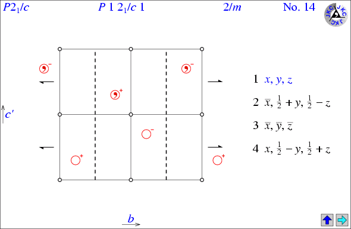
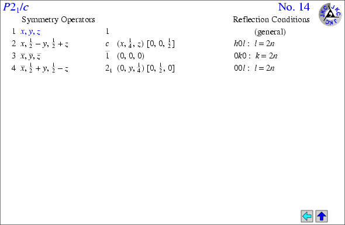
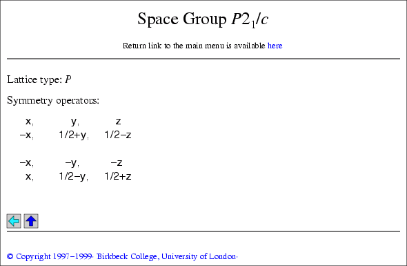

Return link to the guide
A. File Directories on the CD-ROM
With the exception of the main menu (mainmenu.htm) and the copyright notice (copyrite.htm), all of the files are stored in three directories: large, medium, and misc. The directories large and medium contain all of the space group diagrams and tables in high and medium resolution gif-format pictures, respectively, together with the corresponding html files. The remaining directory, misc, contains the files such as this one that provide miscellaneous details and comments on the diagrams and tables.
B. Exploring
From the main menu, first choose the "book" appropriate to the resolution of your screen. From the table of space groups, then click on a space group of interest in order to view the space group diagram. (Note that the table has links to more detailed lists of space groups, especially for the low-symmetry crystal systems.) In order to explore further, you will find that items in blue are generally clickable. (Note that some text clickable items will subsequently change to purple.)
Within the space group diagrams and tables, the following arrows are
used:
| The blue up-arrow returns the reader to the main list of space groups. | |
| The cyan left- and right-arrows toggle the reader between the page showing the space-group diagram and the page(s) showing the symmetry operators in symbolic form plus the reflection conditions for the space group (in that particular setting). | |
| The green arrows allow you to move up and down the page of symmetry operators for space groups with more than 16 symmetry operators per unit cell. |
C. Space Group Diagrams and Tables
Note that items shown in blue on the example pages shown below are not clickable.
The layout of the space group diagrams and tables is best shown by example: The following pages (shown much smaller than in the rest of the hypertext book) are taken from the pages for space group P21/c in its standard setting.
Page 1. View of space group P21/c seen down the b axis.

All of the space group diagrams are drawn with the origin placed at the bottom left-hand corner of the diagram. For an explanation of the symbols used in these diagrams, see the section on space group diagram symbols. Each diagram shows the short and full space group symbols, the point group associated with each space group, together with the allocated space group number.
The left arrow in cyan links the reader to the second page with additional information about the space group (see page 2 below) while the symmetry operator x,y,z shown in blue takes the reader to the third page (see page 3 below).
For the monoclinic space groups only, the labels of the axes are clickable providing views perpendicular to the unique axis as shown below (pages 1a and 1b).
Page 1a. View of space group P21/c seen down the c axis.

Page 1b. View of space group P21/c seen down the a axis.

The primes on the labels a ¢ and c¢ in the above two diagrams is a reminder that these axes do not lie in the plane of the paper.
Page 2. List of the symmetry operators and general reflection conditions.

This page lists the symmetry operators and their associated symmetry element in symbolic form plus the general reflection conditions for the space group. The symmetry element is given its location in round brackets "()" and any translational component associated with it is shown in square brackets "[]". Thus in the above example, the symmetry operator x,1/2-y,1/2+z corresponds to a c-glide plane parallel to the xz plane at y = 1/4. The translational component, shown as [0,0,1/2], indicates a half-unit cell translation parallel to the c axis.
As with the first page, the symmetry operator x,y,z shown in blue takes the reader to the third page shown below.
Page 3. List of the symmetry operators in "cut & paste" format.

This third page duplicates information from the first page, but provides it in a form that enables cutting and pasting of the symmetry operators for use in other crystallographic software.
For centrosymmetric space groups with a centrosymmetric choice of origin, the list is divided into two halves (as demonstrated above) since many crystallographic programs do not require the second half of the list. For non-primitive space groups, the list of symmetry operators does not include those symmetry operators that are related to others due to the presence of a centred lattice.